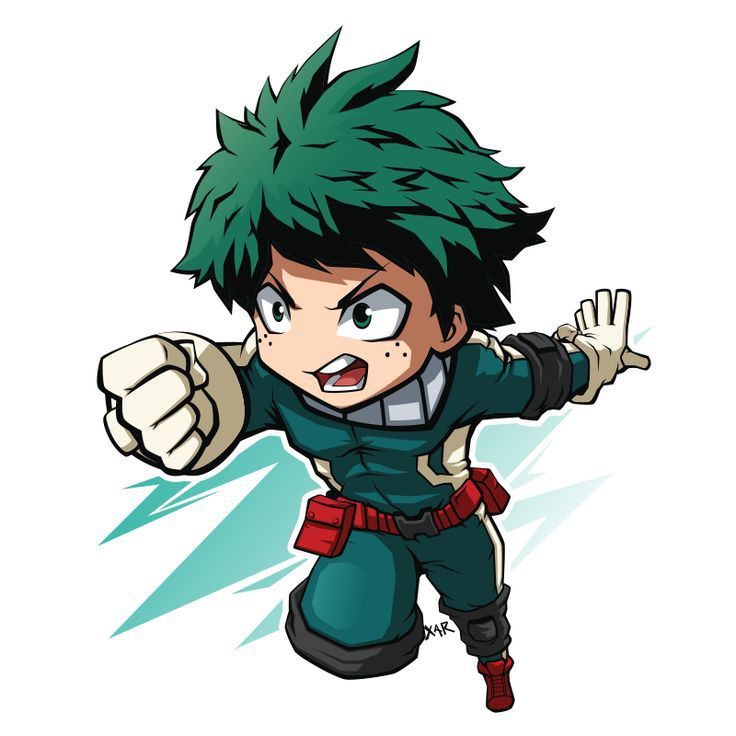

Welcome to Our Site
We provide clean and responsive design solutions to grow your brand.
Get Started

Our Features
Responsive Design
Layouts that work on any device, any screen size.
Modern Look
Clean and professional appearance for your brand.
Fast Performance
Optimized code for quick loading times.